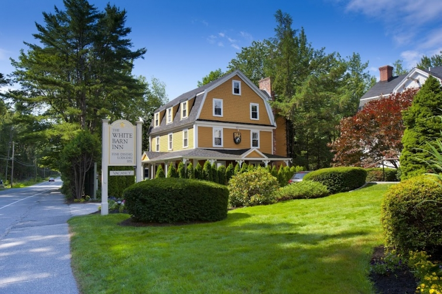
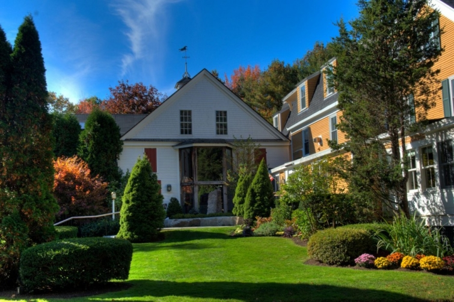

.png)
.PNG)
.PNG)
.PNG)
.PNG)
.PNG)
.JPG)
.JPG)
.PNG)
.PNG)


whitebarninn.com
In the last few days of our virtual vacation here in Maine, we have toured the Cottages at Cabot Cove, The Stone House, and some of the places of interest near Kennebunkport, and we’ve seen a number of lovely rooms in Scarborough. Today I want you to see a world famous inn that we didn’t go to while we were there. It would have been fun to visit, but there was just too much to squeeze in that week. So you and I can enjoy it here now. 
kennebunkportgetaways.com
The White Barn Inn is near Kennebunkport, and it consistently receives the highest of ratings from all travel and food guides -and I do mean THE highest.
whitebarninn.com
They have rooms in the main house and other locations around the grounds. After looking online through all of them, if I had my choice, I would choose to stay in one of the waterfront cottages.
whitebarninn.com
whitebarninn.com
whitebarninn.com
whitebarninn.com
Don’t these cottages seem so cozy with their Mission style furnishings, their leather,and all that warm wood? They seem to fit the location so well.
One of the main reasons that people come to the White Barn Inn is for the food. Their chef, Jonathan Cartwright, is from England and has won numerous awards. He has been featured on many television shows. You can see some of them here.
whitebarninn.com
Here is an assortment of some of their food creations.
whitebarninn.com
They offer a four course prix fixe meal each evening in addition to their regular menu which changes weekly based on the availability of local ingredients. You can view a recent menu here, and I’ve included a sampling of their dessert menu below. What would like to order?
whitebarninn.com
My daughter would eat Creme Brulee at every meal if she could, but I know I would like the Flourless Dark Chocolate Cake with Coffee Ice cream. You can’t get any better than a combination of chocolate and coffee together! (And I would like a cup of coffee with that too, please – black. 🙂 )
They will also prepare a gourmet picnic for you to take to enjoy while you are visiting in the area or one that you can take home with you when you depart the inn.
whitebarninn.com
Private cooking classes are offered with the chef if you care to take them while you stay there, and if that is not enough for you, they do have a cookbook that you can purchase to use to recreate their delicious dishes in your own home.
whitebarninn.com
After enjoying all of that food, I am sure you will want to work some of it off.
They have a gorgeous rock pool for swimming….
kiwicollection.com
or you can do this on the river. 🙂
whitebarninn.com
Perhaps one day we will to return to Maine and stay or dine at the White Barn Inn. There are so many wonderful choices of accommodations and restaurants it is hard to choose between them all!
Finally, I want to show you the last real excursion we made before we left Maine. You probably don’t know it, but one of the things I like to do is look for places that have been featured in movies – especially houses. When I visited New York City with some of my friends, we went to or ate at many of the places that were featured in the movie, You’ve Got Mail. Our family has also stayed several times at a house in Florida that is featured in the last scene of another movie (but that is for another blog post. 🙂 ) Have you ever been to places featured in movies?
Years before we went to Maine, I read this book…
nicholassparks.com
and I saw this tear-jerker movie…
nicholassparks.com
and then Coastal Living magazine came out with this issue:
amazon.com
I adored all of the rooms in the house by the sea that belonged to Kevin Costner’s character (and he wasn’t too bad to look at either .)
schematiclife.blogspot.com
If I lived along the coast, that kitchen would be my dream kitchen…what a beautiful ceiling, and I like the mix of white and stained wood.
schematiclife.blogspot.com
schematiclife.blogspot.com
We knew from the article that the home was located near Bath, Maine.
Bath is not a very large town.
We also knew that it had to be in a wooded area on the water.
How hard could it be to find, right?
Well…we drove around and around and around….in and out of many wooded areas along the coast there near Bath. My husband is a very patient man. Unfortunately we did not have any luck finding it.
But these people did.
activerain.com
Not only did they find it, they also got to stay in it! How wonderful! Maybe we will be lucky like them on our next trip.
I’m sad to say, this brings our vacation to a close. Thank you for coming along with me on our trip, and I hope you have enjoyed visiting these places in Maine. I’m afraid it’s back to normal life at home on Monday. 🙁
Hope I see you then!


.PNG)
Kelly….going through your posts and saw this one and am curious….what house in Florida have you stayed that was in a movie…what movie? Inquiring minds (mine) want to know!
Andrea 🙂
thanks again for helping me find the HGTV dream home in Rose mary beach Fl
———————————————————————
Andrea, that house is Katie’s Light in Fernandina – seen in the very last scene of the movie Pippi Longstocking. I did a post on the cottage here: http://www.talkofthehouse.com/katies-light/ . We have also seen the house from the movie The Truman Show in Seaside. Unfortunately, it is not available for rent, but I think the house Jim Carey stayed in while filming the move is available for rent there (the Carey Cottage.)
Kelly
I would love to visit Maine! Just came across your blog and I’m lovin’ all these destinations!……The reader who asked about P.E.I. It is a beautiful place to visit…Stayed at the Charlotte’s Rose Inn in downtown Charlottetown (small and quaint). Loved it! The Anne of Green Gables play is very well done. If you visit Aiken House and Gardens blog you can learn more of this beautiful province in Canada.
——————————————————————————
Anita, welcome! I am so glad you found your way to the blog. I would LOVE to be headed back to Maine right now! (especially with the humidity here this bright sunny morning.) Thanks for all the info on Prince Edward’s Island. I hope we get there one day.
Enjoy your weekend!
Kelly
Yes we stayed in this wonderful cabin. It was the most peaceful relaxing vacation I’ve had. I know the grand kids of the owners of the house. It was ahhhhhmazing!
———————————————————————-
OMG. How lucky you were! I would love to see the inside after the movie crew finished with it. It was such a gorgeous rustic style in the movie. We are all jealous! 🙂
Kelly
Beautiful photos!~ Gosh I love that rock pool! looks so serene and natural.
————————————————————————
Sarah, I love that rock pool too, but I bet that water gets freezing there in Maine, don’t you? Thanks for stopping by my blog!
Kelly
Love this piece. Being from New England – always love hearing things about places up there. Maine is very special. Love your blog and focus…Keep up the great work!
————————————————————————
Stephen, I’m happy you liked this post! Maine IS very special to me too, and I wish we could go back to visit there again. I LOVE your work and your blog! Thank you so much for reading and leaving your encouraging words here.
Kelly
You brought back memories of a New England road trip we took a few years ago. We stayed in Ogunquit, Maine, but drove through Kennebunkport. We loved all the picturesque homes along the coast.
———————————————————————–
Carol, that must have been a wonderful trip. Ogunquit is near Perkins Cove – my favorite little town we visited. I hope you got to eat at Barnacle Billy’s when you were there.
So glad you dropped by and left a comment!
Kelly
Terence and I visited the Maine coast about 3 years ago during the fall (gorg time to go btw – the leaves are amazing!!) – and I CAN’T WAIT to go back! In fact, if I ever retire, I’m planning to move there 🙂 Terence and I didn’t stay at the White Barn Inn, but we did eat dinner there. Probably Top 5 meals of my life (and expensive 😉 I have to say, Camden, Maine was my favorite place we visited. We stayed at a great B & B – the inn @ sunrise pointe. Loved your tour of Maine – thanks for sharing! I’m hoping I can show your posts to T and he will want to take me back very, very SOON!
————————————————————————
THAT sounds like a smart plan Katie! ha ha. We did not get to Camden, but our sons have been talking about a trip to Maine so they might get the opportunity to go there. How lucky for you that you ate at The White Barn Inn. Top 5 meals of your life, wow!
I’m going to go check out your inn. Thank you for telling me about it!
Kelly
Thanks for the latest installment in your awesome Maine vacation series! I love it all, but especially the White Barn Inn rock pool and the Message in a Bottle house. Amazing, Kelly!
————————————————————————
Aimee, isn’t that pool something?! I wonder if it is heated though?? Mightly cold in Maine. The Message in a Bottle House is one of my all time favorite movie houses. It has soooo much character and the appearance of history.
Thank you for reading and leaving your kind comments here!
Kelly
Lovely! Kelly-thank you for planning our dream trip to Maine. 🙂 I have enjoyed each of your posts and want to see each of these places for myself now! I would also love to visit Prince Edward Island. Have you been there?
Have a great day!
———————————————————————
Thanks for allowing me to plan your trip Susan! 🙂 I’m so glad you have enjoyed the posts. I scrapped 2 posts totally because they were as boring as my husband’s old slides from his trip to Texas (shhh don’t tell him I said that!). Anyway, I love looking at inns and these have been some pretty ones to me.
Prince Edward Island – of Anne of Green Gables fame. No, I have never visited there, but boy did I want to when I was younger reading the books and watching the shows.
Kelly